Approach to & Pathology of a Pelvic Mass
- Every cell type in the ovary can become a tumour — so the classification writes itself: epithelial, germ cell, sex cord–stromal (plus metastases from elsewhere).
- Age sorts the differential. Adults → epithelial. Young women → germ cell. Most ovarian neoplasms are not malignant; cancer is more likely post-menopausally.
- Benign → borderline → malignant is one question: invasion. Complex architecture and atypia without frank invasion = borderline. Invasion = carcinoma.
- Most "ovarian" high-grade serous carcinoma isn't ovarian — it arises in the fallopian tube, from STIC, via p53, de novo. The low-grade pathway is the slow one that grows out of a borderline tumour.
- Ovarian cancer presents late because there is no early warning symptom — treatment is surgical debulking and staging ± chemotherapy.
- Beware the bilateral mucinous tumour. Primary ovarian mucinous tumours are usually unilateral; bilateral + multinodular means go look at the GI tract.
Learning Objectives
- Compare and contrast benign versus malignant pelvic masses.
- Classify ovarian neoplasms based on histologic differentiation and clinical behaviour, and list common examples of each type.
- List benign and malignant masses in the ovary.
- List the patterns of spread for a malignant ovarian tumour.
- Explain why ovarian cancer has a high mortality rate.
- List the most common tumours that metastasize to ovary, and understand how they may present clinically and pathologically.
- List common germ cell serum markers, which tumours produce them, and explain why such markers are clinically useful.
- Explain the classic presentation of ovarian cancer and its outcomes.
Dr. Chris Armstrong, Department of Pathology, LHSC — three recorded parts (30 + 20 + 16 min). His framing throughout: don't memorize every neoplastic condition of every cell type; learn the organizing scheme and the common things.
Epithelial Tumours
Start with the histology of a normal ovary, because every tumour group is named after a cell that's already there.
Normal Ovary First
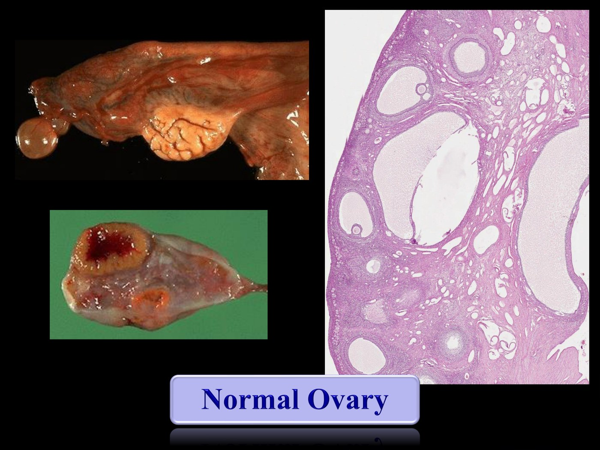
Normal ovary, gross and low power. The cut surface on the left shows a ruptured corpus luteum — she ovulated recently. The histology shows primordial and secondary follicles in a supporting stroma.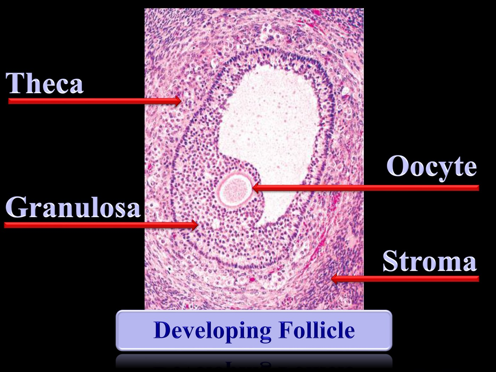
Four cell populations, four tumour families. Theca and granulosa → sex cord–stromal tumours. The oocyte → germ cell tumours. The stroma → fibroma/thecoma.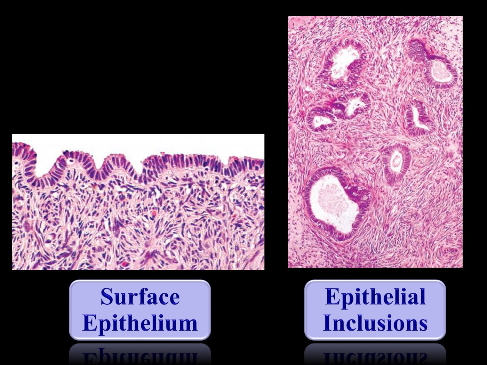
Where the epithelial tumours come from — the classic model. There is no epithelium inside the ovary, only on its surface. Ovulation ruptures that surface; involution traps epithelium in the stroma as inclusions. Those inclusions were long held to be the origin of epithelial neoplasia. Hold this thought — it gets revised below.![Slide showing a diagram of the ovary with three labelled boxes: germinal epithelium with benign serous and mucinous cystadenoma and Brenner tumour, borderline serous and mucinous cystadenomas, malignant serous and mucinous cystadenocarcinoma, endometrioid carcinoma and transitional cell carcinoma; germ cell with benign dermoid cyst (teratoma) and malignant dysgerminoma, yolk sac tumour, choriocarcinoma and embryonal carcinoma; and gonadal stroma with benign thecoma and fibroma and malignant granulosa cell tumour and Sertoli-Leydig cell tumour.](../../../../assets/images/week-5/pelvic-mass/classification.jpg) The map for the whole lecture. Three compartments, each with benign, borderline and malignant members. Neoplasia is unregulated cell growth — and since every cell type in the ovary can undergo it, every compartment generates tumours. Everything below is just filling in this diagram.
The map for the whole lecture. Three compartments, each with benign, borderline and malignant members. Neoplasia is unregulated cell growth — and since every cell type in the ovary can undergo it, every compartment generates tumours. Everything below is just filling in this diagram.
| Who gets what | |
|---|---|
| Adults | Epithelial tumours, by far the most common |
| Young patients | Germ cell tumours — and among those, teratomas are the most common |
| Most ovarian neoplasms | Are not malignant |
| Malignancy | More likely in the older / post-menopausal age group |
How a Pelvic Mass Presents
| Symptom | Mechanism |
|---|---|
| Pain | Cystic tumours rupture or torse, causing pain and inflammation |
| Distension | Mass effect from a large tumour — or ascites, which some of these tumours produce |
| Compression | Big masses press on bowel and bladder → change in bowel or bladder habits |
| Systemic | Weight loss, fever, anorexia — usually a marker of metastatic disease |
| Endocrine | Sex cord tumours can be hormonally active. Estrogen → endometrial hyperplasia, peri- or post-menopausal bleeding. Androgens → hirsutism, virilization |
| Asymptomatic | Many are — and that is precisely why some ovarian cancers present late |
Case 1 — 45F, Increasing Abdominal Girth
45-year-old woman with a large ovarian mass
Increasing abdominal girth, vague pain, not feeling great. Investigations eventually find a large ovarian mass; she goes to surgery and it arrives in the lab as a large, multiloculated cystic mass filled with glistening, gooey material.
 Impressive, but benign. Gross: thin-walled cysts, a "soap bubble" arrangement, no solid or fleshy areas, a smooth ovarian surface. Histology: a simple lining, nuclei all aligned along the base, no stratification, not mitotically active, mucin vacuoles in the cytoplasm. That's a mucinous cystadenoma.
Impressive, but benign. Gross: thin-walled cysts, a "soap bubble" arrangement, no solid or fleshy areas, a smooth ovarian surface. Histology: a simple lining, nuclei all aligned along the base, no stratification, not mitotically active, mucin vacuoles in the cytoplasm. That's a mucinous cystadenoma.
A cystic lesion is defined by what it's lined by. So the two questions are always (1) what cell type lines it, and (2) how is that epithelium behaving — orderly single layer, or crowded, stratified, tufting and detaching? Growth rate shows up architecturally, because cells growing too fast push their neighbours off the basement membrane.
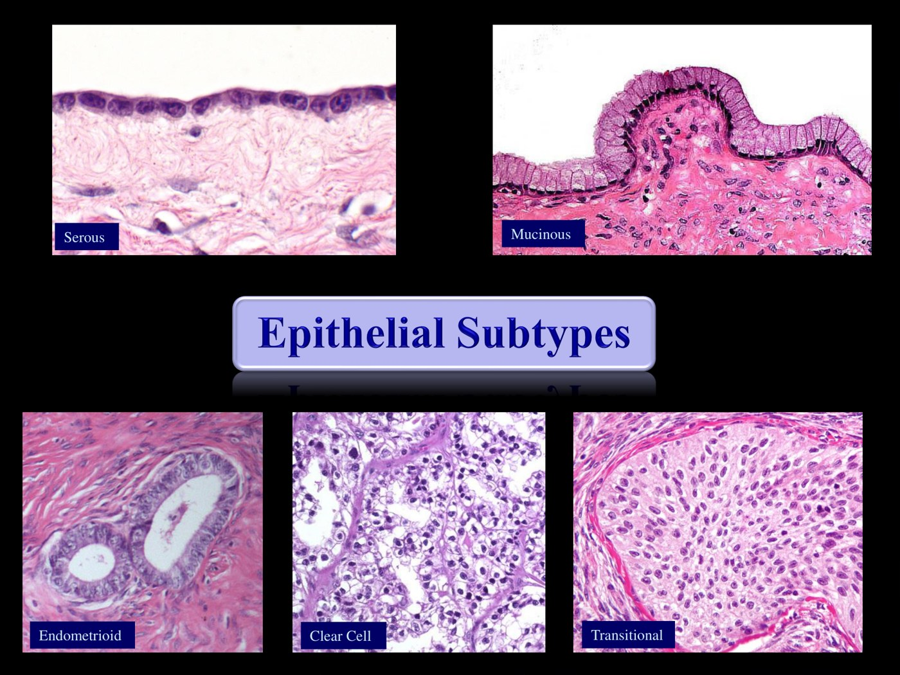
The epithelial subtypes. Serous — squared-off cuboidal cells, little cytoplasm, not very cohesive. Mucinous — columnar, with mucin vacuoles. Endometrioid mimics endometrial glands; clear cell is clear because of cytoplasmic glycogen (and tends to be malignant); transitional is what gives rise to the benign Brenner tumour. Serous and mucinous are the two to actually know.Nomenclature — three words stuck together
Dr. Armstrong's own description: pathologists don't have a great deal of imagination, we just stick a few descriptors together. The formula is cell subtype + architecture + behaviour:
| Name | Decodes as |
|---|---|
| Serous cystadenoma | Serous lining · cystic · benign |
| Serous cystadenofibroma | Serous lining · cystic and fibrous · benign |
| Serous borderline tumour | Serous lining · pre-cancerous |
| Serous adenocarcinoma | Serous lining · gland-forming · invasive |
Elsewhere in the female tract the pre-cancerous step is called dysplasia (vulva) or intraepithelial neoplasia (cervix — see 4.8). In the ovary the word borderline became entrenched instead. Same biology: it has acquired mutations but hasn't figured out how to invade yet. You will also see it called "atypically proliferating".
Case 2 — 52F, Borderline Tumour
52-year-old woman with an ovarian mass
Pain and mass effect, an ovarian mass on imaging, surgical resection. Grossly it is again cystic — but this time the cyst lining is not smooth.
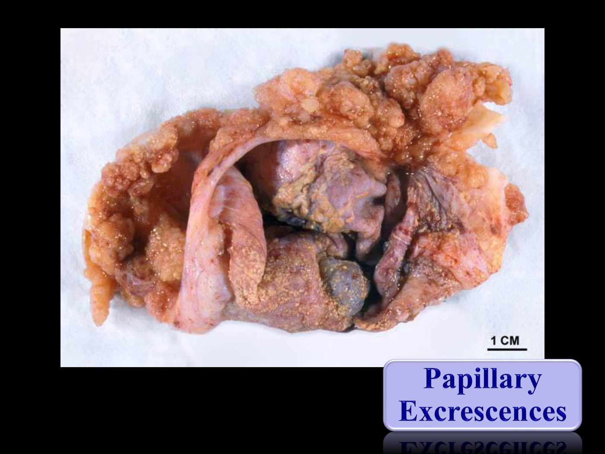
Papillary excrescences. Soft, friable, exophytic projections lining the cyst. Soft, fleshy and exuberant is a concerning gross sign — it is architectural complexity you can see without a microscope. The four features of borderline, all visible here. Stratification (nuclei no longer along the base) · tufting · detached cell clusters · papillary architecture — with mild cytologic atypia and no stromal invasion.
The four features of borderline, all visible here. Stratification (nuclei no longer along the base) · tufting · detached cell clusters · papillary architecture — with mild cytologic atypia and no stromal invasion.
| Borderline epithelial tumour | |
|---|---|
| Definition | Architecturally complex, cytologically atypical, no frank invasion (a little micro-invasion is still called borderline) |
| Treatment | Surgical excision |
| Prognosis | Very good if all disease is removed — it has not learned to invade |
Complications
| Complication | Detail |
|---|---|
| Implants | Extraovarian deposits of the same non-invasive neoplasia on peritoneal surfaces — mesenteric fat, omentum. Behave like multifocal disease rather than true metastasis. Only the serous subtype does this |
| Invasive implants | When implants acquire the mutations to invade. Bad — essentially peritoneal carcinoma, and treated as such |
| Adhesions | From the implants themselves |
| Recurrence | Implants or residual unresected disease. Slow-growing — may come back years later |
| Progression | To frankly invasive low-grade serous carcinoma |
The peritoneum is lined by cells similar to the ovarian surface epithelium and the tube. So a serous neoplastic stimulus can plausibly arise multifocally across that whole lining — the ovary and the peritoneum are the same tissue answering the same signal. A mucinous, endometrioid or clear cell deposit in the omentum has no such explanation: that is cancer, and you should look for it.
Malignant Epithelial Tumours
 The line is crossed here. Grossly: still cystic, but now with much more solid, fleshy tissue. Microscopically: still serous morphology, but the cells are now invading the stroma (arrow). That makes it serous adenocarcinoma — the number one form of "ovarian cancer".
The line is crossed here. Grossly: still cystic, but now with much more solid, fleshy tissue. Microscopically: still serous morphology, but the cells are now invading the stroma (arrow). That makes it serous adenocarcinoma — the number one form of "ovarian cancer".
| Low-grade serous carcinoma | High-grade serous carcinoma | |
|---|---|---|
| Arises from | A background of borderline tumour | De novo — skips the borderline phase entirely |
| Driver | — | Often p53-mediated |
| Origin | Ovary | Probably the tubal epithelium, not the ovary |
| Tempo | Slow, over years — slow-growing is not the same as benign | Fast, and the form that kills |
| Typical patient | — | Post-menopausal — younger if familial (BRCA1/2, breast–ovarian family history) |
 The theory of origin has moved. Studies of clonality and of pre-cancerous lesions in the tube — STICSerous tubal intraepithelial carcinoma: pre-invasive malignant change confined to the epithelium of the fallopian tube, most often at the fimbrial end. Now regarded as the precursor of most high-grade serous carcinoma. — showed that most so-called high-grade serous ovarian carcinoma is really tubal carcinoma that seeded the ovary. The right-hand panel is the older inclusion-cyst model, which still applies to the low-grade pathway.
The theory of origin has moved. Studies of clonality and of pre-cancerous lesions in the tube — STICSerous tubal intraepithelial carcinoma: pre-invasive malignant change confined to the epithelium of the fallopian tube, most often at the fimbrial end. Now regarded as the precursor of most high-grade serous carcinoma. — showed that most so-called high-grade serous ovarian carcinoma is really tubal carcinoma that seeded the ovary. The right-hand panel is the older inclusion-cyst model, which still applies to the low-grade pathway.
Not long ago, a tumour involving ovary and tube was called ovarian cancer by definition. The current term is tubo-ovarian. It's also why women with a BRCA mutation undergo prophylactic removal of the tubes and ovaries — and why opportunistic salpingectomy has become routine at hysterectomy (see 5.5).
Epithelial tumours are often bilateral — with the exception of mucinous. So a bilateral borderline or malignant mucinous tumour should make you suspicious that you are not looking at a primary at all. That thread is picked up in Part 3.
Spread, treatment and outcome
 Why ovarian cancer behaves the way it does. The ovary and tube hang free in the abdominopelvic cavity, so besides local invasion and nodal spread, tumour can simply seed itself across the peritoneum — diaphragm, liver and bowel serosa, and above all the omentum (right).
Why ovarian cancer behaves the way it does. The ovary and tube hang free in the abdominopelvic cavity, so besides local invasion and nodal spread, tumour can simply seed itself across the peritoneum — diaphragm, liver and bowel serosa, and above all the omentum (right).
| Ovarian carcinoma treatment | |
|---|---|
| Primary treatment is surgical | Uterus, ovaries and tubes · omentum · peritoneal biopsies · ± lymph nodes |
| Debulking | Remove as much tumour as possible, because of the propensity for peritoneal disease |
| Staging | Even with no visible disease, sample suspicious peritoneum — has it reached the ovarian surface? the peritoneum? the other ovary? Stage guides adjuvant therapy |
| Chemotherapy | For advanced stage and high-grade lesions. Sometimes given neoadjuvantly to shrink tumour before resection |
| Outcome | Confined to the ovary and fully resected → good. Higher grade / advanced stage → poor |
Three things compound. (1) No early warning symptom — the ovary can grow a tumour silently. (2) A free peritoneal surface to seed, so "advanced stage" arrives without ever needing to invade lymphatics. (3) The commonest type is the aggressive one — high-grade serous, de novo, p53-driven. Contrast endometrial carcinoma in 5.1, where 72% present at Stage 1 because they bleed.
Germ Cell and Sex Cord–Stromal Tumours
Less common than epithelial, but they own the young patient and the hormonally active presentation.
Mature Cystic Teratoma
Mid-20s, abdominal pain, unilateral ovarian mass
Imaging and exam show a unilateral ovarian mass. At resection it is partly cystic, partly solid, and contains greasy sebaceous material and hair.
 Hair and sebum in an ovarian cyst. Commonly called a dermoid cyst clinically; the proper name is mature cystic teratoma.
Hair and sebum in an ovarian cyst. Commonly called a dermoid cyst clinically; the proper name is mature cystic teratoma.
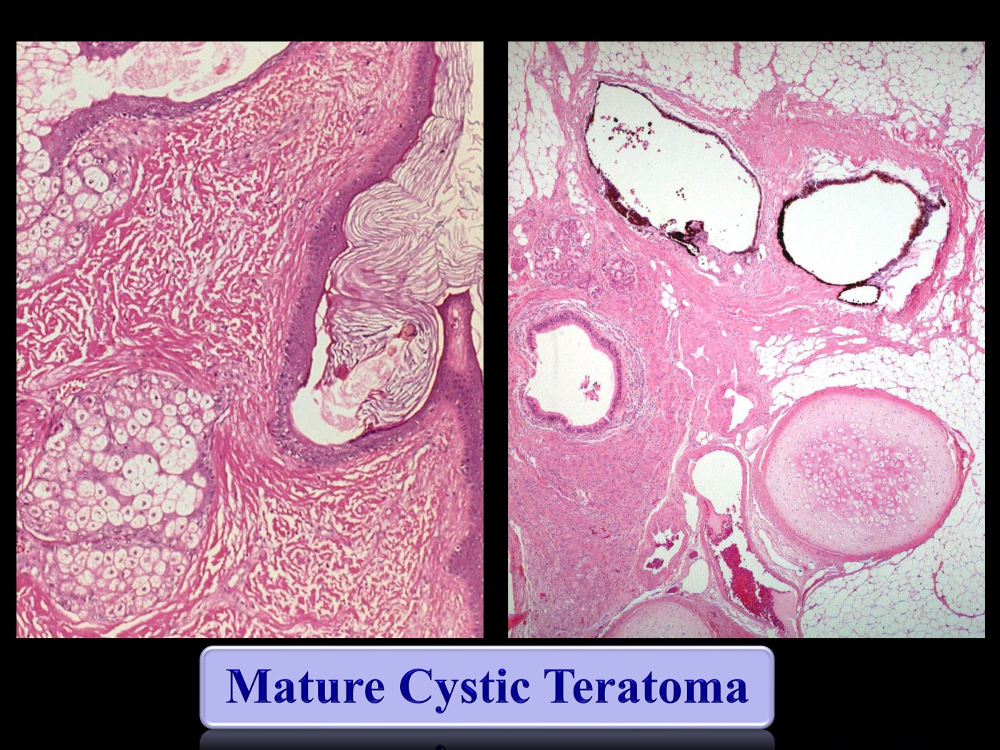
Why "mature". A mix of fully differentiated adult tissues from all three germ layers — skin with keratin and sebaceous glands, respiratory epithelium (sometimes in a C-shape like primitive trachea), salivary-type glands, fat, cartilage, pigmented retinal epithelium, even teeth. As long as it is purely mature, it is entirely benign.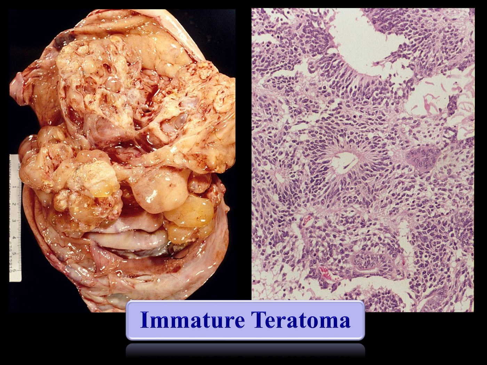
The malignant counterpart. Grossly much more soft, fleshy tissue. Microscopically, immature tissue — usually primitive neuroepithelium. The more immature tissue, the higher the grade.A mature component can develop an adult-type malignancy: the squamous element becoming a squamous cell carcinoma, or the glandular element an adenocarcinoma. Rare, but it explains why "mature teratoma" isn't a promise for life.
Malignant Germ Cell Tumours & Serum Markers
Germ cells can become a whole human being, so under the wrong conditions they can differentiate along essentially any lineage — hence a long list of malignant germ cell tumours. The most common is dysgerminoma, the ovarian counterpart of testicular seminoma. They are uncommon overall, arise in the younger age group, and are often mixed (teratomas, by contrast, tend to be pure in the ovary).
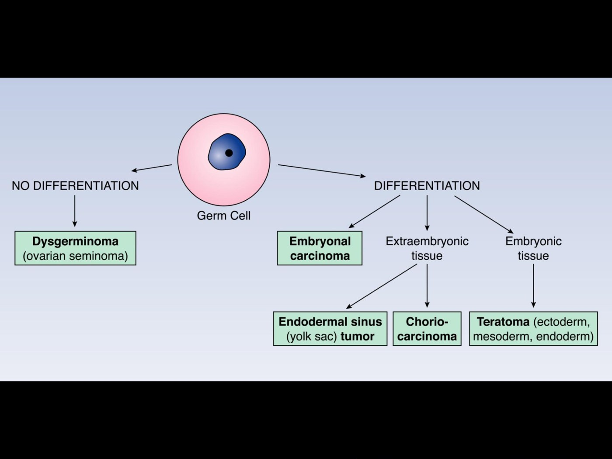
One branch point explains the whole family. No differentiation → dysgerminoma. Differentiation → embryonal carcinoma, which then goes either extraembryonic (yolk sac tumour, choriocarcinoma) or embryonic (teratoma). The markers in the next figure map straight onto this tree.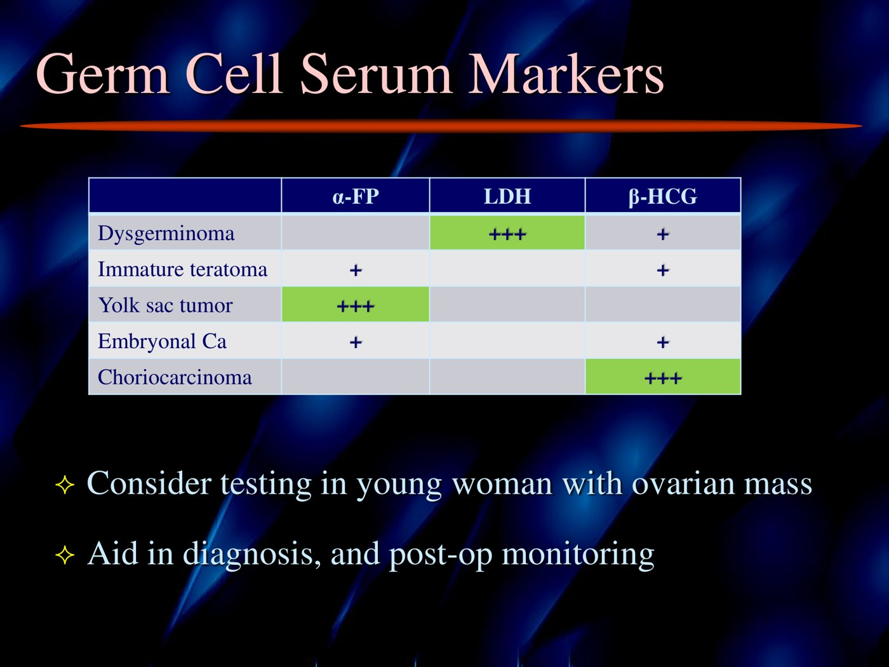
Three classic associations worth memorizing. Dysgerminoma → LDH. Yolk sac (endodermal sinus) tumour → α-fetoprotein. Choriocarcinoma → β-hCG — which makes sense, since it is differentiating towards placenta. The overlap in the weaker columns is why markers aid diagnosis rather than make it.Young woman, unilateral ovarian mass on ultrasound. α-fetoprotein sky high → higher probability of a malignant germ cell tumour → she goes straight to gynecology. No marker elevation and a simple cyst → you're thinking endometrioma or cystadenoma, and the urgency is different. Markers are also used for post-operative monitoring.
And for the epithelial side: CA-125, which may be elevated in serous carcinoma. Useful when working a patient up for the first time — it is not a screening test.
Sex Cord–Stromal Tumours
Fibroma — the common incidental one
57-year-old woman, hysterectomy for leiomyomas
Surgery for a benign reason, and — oh, by the way — a small, firm ovarian mass that needs working up. It may be sent for frozen section intraoperatively.
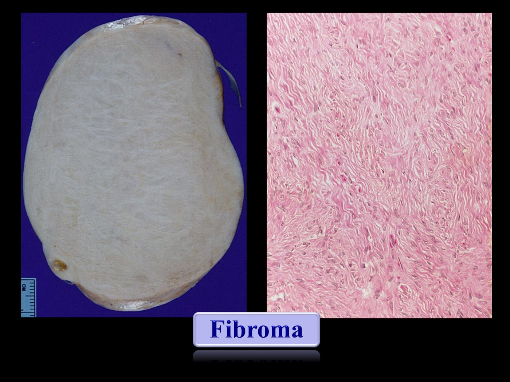
Well circumscribed, firm, rubbery, homogeneous, no haemorrhage. Microscopically just bland spindled fibrous stroma — more collagen than normal ovarian stroma, so it takes up more pink. Usually unilateral. Benign, and common. (Add a cystic epithelial component and the name becomes cystadenofibroma, which classifies with the epithelial group.)Granulosa cell tumour — the hormonal one
63-year-old woman presenting with vaginal bleeding
Not a mass complaint — post-menopausal bleeding. Endometrial biopsy shows atypical hyperplasia, so she needs a hysterectomy. Imaging also shows an adnexal mass. Hysterectomy and BSO are performed.
 The uterus first. In a 63-year-old the lining should be atrophic; instead it is thick and shaggy. Histologically the glands are too many, too crowded, atypical, and fusing — and gland fusion in an endometrial sample is not a good sign. This is endometrial adenocarcinoma. Note this is exactly the 30–40% scenario from 5.1: atypical hyperplasia on biopsy, carcinoma in the specimen.
The uterus first. In a 63-year-old the lining should be atrophic; instead it is thick and shaggy. Histologically the glands are too many, too crowded, atypical, and fusing — and gland fusion in an endometrial sample is not a good sign. This is endometrial adenocarcinoma. Note this is exactly the 30–40% scenario from 5.1: atypical hyperplasia on biopsy, carcinoma in the specimen.
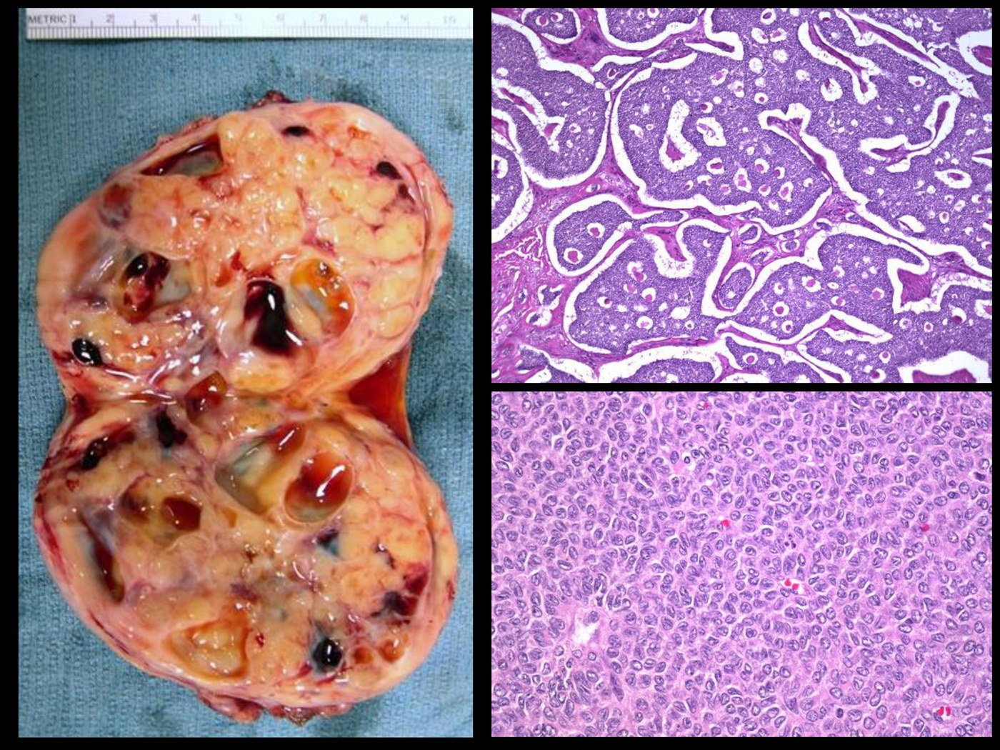
Now the ovarian mass. Fleshy with cystic and haemorrhagic areas, no real necrosis. Those haemorrhagic cysts sit in tissue with little fibrous support — which is why about 10% present with rupture and haemoperitoneum rather than with a mass. Where have we seen these cells before? The microfollicular pattern with Call–Exner bodiesSmall rosette-like spaces surrounded by granulosa tumour cells, recapitulating the follicle. A characteristic feature of adult granulosa cell tumour. recapitulates the follicle, and the nuclei have grooves. It is a tumour of the granulosa cells shown in the very first figure on this page.
Where have we seen these cells before? The microfollicular pattern with Call–Exner bodiesSmall rosette-like spaces surrounded by granulosa tumour cells, recapitulating the follicle. A characteristic feature of adult granulosa cell tumour. recapitulates the follicle, and the nuclei have grooves. It is a tumour of the granulosa cells shown in the very first figure on this page.
| Granulosa cell tumour | |
|---|---|
| Behaviour | Malignant, but slow-growing and indolent |
| Recurrence | Late — peritoneal recurrence even 10 years after resection is not unheard of |
| Hormones | Often estrogen-producing — so it can present with endometrial hyperplasia or peri-/post-menopausal bleeding rather than a mass |
| Rupture | ~10% present with symptoms of ruptured haemorrhagic cysts, possibly haemoperitoneum |
A rapidly growing high-grade tumour recurs early and aggressively. An indolent one recurs late. That is why granulosa cell tumour, which is uncommon, still gets taught: it is the model for hormone production by a sex cord tumour and for surveillance that cannot be stopped at five years.
Metastases to the Ovary
The ones that masquerade as a primary — and the two eponyms.
Case — 60F, Bilateral Ovarian Masses
60-year-old woman, abdominal discomfort and distension
Ascites and bilateral, multinodular ovarian masses. At resection they are soft and fleshy with areas of cystic degeneration.
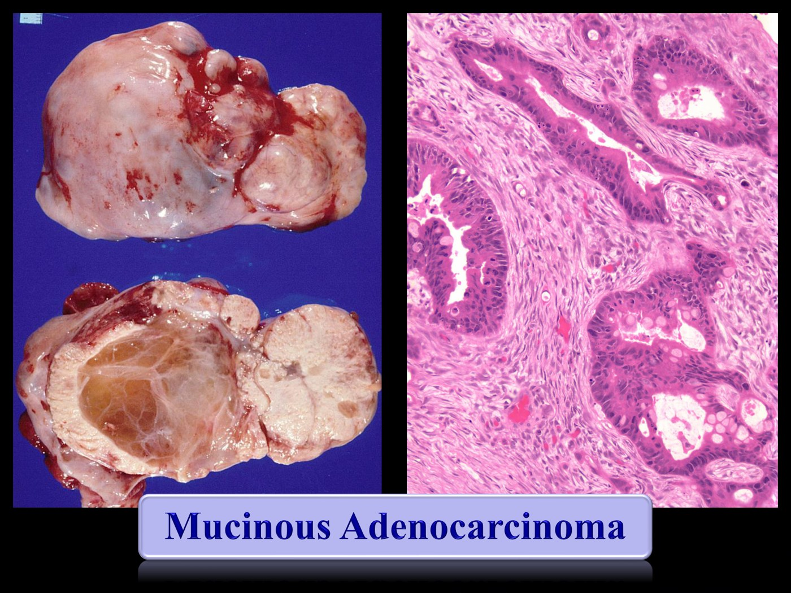
Adenocarcinoma, and specifically mucinous. Nuclei are hyperchromatic, pleomorphic, mitotically active; cells bud off and invade. The cytoplasmic mucin vacuoles look like the goblet cells of intestinal-type epithelium — which is the clue.Told at frozen section that an ovarian tumour "has a mucinous look to it", the surgeon knows to go and look at the appendix — because a mucinous tumour metastatic to the ovary mimics an ovarian primary. This is the practical payoff of "beware the bilateral mucinous tumour".
 And there it is. The appendix is expanded by a mucocele-like lesion, its lumen filled with mucinous material, lined by the same mucin-producing atypical glandular epithelium. Appendiceal adenocarcinoma metastatic to the ovary, presenting as bilateral ovarian masses.
And there it is. The appendix is expanded by a mucocele-like lesion, its lumen filled with mucinous material, lined by the same mucin-producing atypical glandular epithelium. Appendiceal adenocarcinoma metastatic to the ovary, presenting as bilateral ovarian masses.
 Pseudomyxoma peritonei — "jelly belly". Neoplastic cells reach the surface of appendix or ovary, proliferate in the abdominopelvic cavity and keep secreting mucin until it fills the abdomen. A complication of advanced mucinous adenocarcinoma of GI origin mimicking an ovarian mass.
Pseudomyxoma peritonei — "jelly belly". Neoplastic cells reach the surface of appendix or ovary, proliferate in the abdominopelvic cavity and keep secreting mucin until it fills the abdomen. A complication of advanced mucinous adenocarcinoma of GI origin mimicking an ovarian mass.
Krukenberg tumour
 The pitfall. Grossly this is a bilateral, solid, rubbery, homogeneous, fibrotic ovary — which looks exactly like a fibroma. The difference is only visible down the microscope: diffuse infiltration of that stroma by signet ring cells. Freezing artefact makes those inconspicuous cells even easier to miss at frozen section.
The pitfall. Grossly this is a bilateral, solid, rubbery, homogeneous, fibrotic ovary — which looks exactly like a fibroma. The difference is only visible down the microscope: diffuse infiltration of that stroma by signet ring cells. Freezing artefact makes those inconspicuous cells even easier to miss at frozen section.
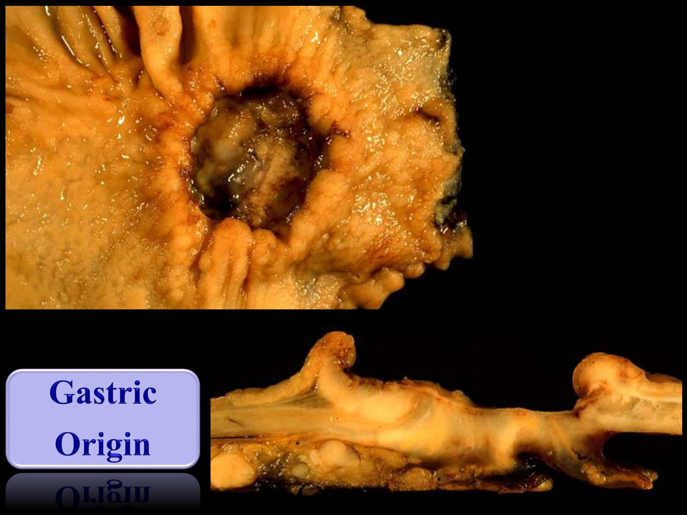
The primary. A gastric ulcer with rolled, rounded edges, and on cross-section diffuse infiltration of the stomach wall — diffuse-type gastric adenocarcinoma. The ovarian mass may be the initial presentation.| Tumours that like to go to the ovary | Note |
|---|---|
| GI tract — appendix, stomach, colorectal | The big one |
| Biliary tract and pancreas | |
| Breast | Especially lobular carcinoma — same single-cell infiltrative pattern, so it can also look Krukenberg-like |
| Endometrium | Still a metastasis, even though both organs are gynecologic |
Endometrioid adenocarcinoma can be primary to the ovary. So when tumour is in both places, the pathologist must decide: ovarian primary spread to endometrium? endometrial primary spread to ovary? or two synchronous primaries? The clues are contextual — is there atypical endometrial hyperplasia in the background? Is there endometriosis in the ovary?
| Clues that a mass is metastatic |
|---|
| Bilateral |
| Multinodular |
| A diffuse infiltrative pattern (Krukenberg) |
| A bilateral atypical or malignant mucinous tumour — primary ovarian mucinous carcinomas and borderline tumours are generally low grade, low stage and unilateral |
Immunohistochemistry and other ancillary studies help, but they only take you part of the way — some cases genuinely require clinical correlation and a metastatic work-up.
Summary
| Group | What to carry away |
|---|---|
| Types | Epithelial, sex cord–stromal, germ cell. Epithelial → adults. Germ cell → young. |
| Epithelial | Serous most common subtype, mucinous also common. Benign / borderline / malignant, split on invasion. Carcinoma often presents late. Treated with surgical resection ± staging ± chemotherapy |
| Germ cell | Mature teratoma is the most common benign one; dysgerminoma the most common malignant one. Serum markers help guide management |
| Sex cord–stromal | Fibroma by far the most common — firm rubbery nodule, often incidental. Granulosa cell tumour the most common malignant one — estrogenic, slow-growing, late recurrence |
| Metastatic | GI, pancreatobiliary, breast, endometrium. Beware the bilateral mucinous tumour — check that appendix. Classic patterns: bilateral, multinodular, Krukenberg (signet ring), pseudomyxoma |
Every Ovarian Tumour on One Map
- Serous cystadenoma
- Mucinous cystadenoma — huge, multiloculated
- Brenner tumour (transitional)
- Serous or mucinous: atypia + complex architecture, no stromal invasion
- Serous only → peritoneal implants
- High-grade serous — the killer: de novo, p53, starts in the tube (STIC)
- Low-grade serous — slow, grows out of a borderline tumour
- Mucinous · endometrioid · clear cell
CluesCA-125 (serous) · often bilateral — except mucinous
- Mature cystic teratoma (“dermoid”) — all three germ layers: hair, sebum, teeth
None — an epithelial category
- Dysgerminoma (ovarian seminoma) → LDH
- Yolk sac tumour → AFP
- Choriocarcinoma → β-hCG
- Embryonal carcinoma → weak AFP + β-hCG
- Immature teratoma — primitive neuroepithelium, graded
CluesSerum markers — a sky-high AFP in a young woman goes straight to gynecology
- Fibroma — most common; firm, white, often incidental
- Thecoma
None — an epithelial category
- Granulosa cell tumour — estrogen; Call–Exner bodies; slow, can recur 10 years later
- Sertoli–Leydig cell tumour — androgens
CluesEstrogen → endometrial hyperplasia, post-menopausal bleeding. Androgens → hirsutism, virilization
- Stomach → Krukenberg: bilateral, solid, fibroma-like, signet ring cells
- Appendix → bilateral mucinous tumour ± pseudomyxoma peritonei
- Colorectal · biliary / pancreas · breast (lobular) · endometrium
CluesBilateral · multinodular · diffusely infiltrative — go looking for a primary
Built from Dr. Chris Armstrong's three-part "Ovarian Neoplasms" module and its slide deck (Department of Pathology, LHSC / Western). All figures are slides from that deck, except the closing tumour map, which is drawn for these notes from the deck's content; its one addition, that the Sertoli–Leydig cell tumour is the androgen-secreting one, was checked against a PMC case review on 27 Sept 2026. Auto-captions on the recordings garbled a good deal of vocabulary — "crooked berg"/"crew grinberg" for Krukenberg, "fibromyalgia" for fibroma, "Ethiopia" for atypia, "collects in our bodies" for Call–Exner bodies, "just German coma" for dysgerminoma, "a side" for ascites — and the deck was followed wherever the two disagreed. The endometrial pathology this lecture touches in its granulosa case is covered in 5.1; non-neoplastic causes of an adnexal mass are in 4.15 and 4.13.